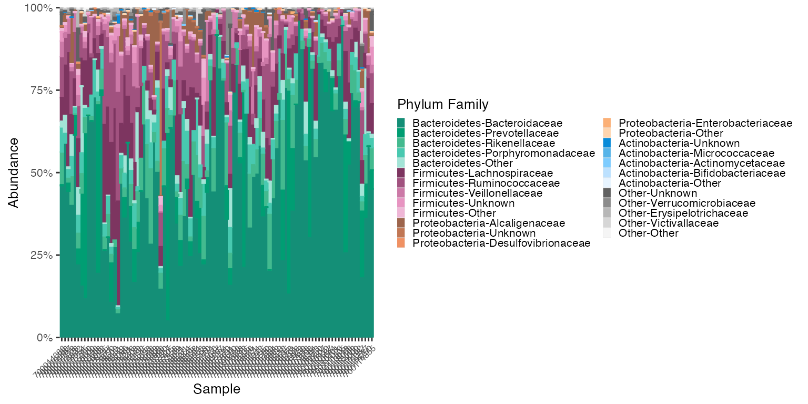

Human Microbiome Project
Erin Dahl
October 31, 2022
Source:vignettes/microshades-HMP.Rmd
microshades-HMP.RmdHuman Microbiome Project 16S Data Vignette
This vignette uses 16S rRNA sequencing data from variable region v1-v3 in the Human Microbiome Project. Stool samples from male subjects will be explored at the Phylum & Family taxonomic levels.
This data is available in the HMP16SData library. To download use
BiocManager::install("HMP16SData").
Learn more about the HMP16S Data here
Additionally, the package speedyseq is necessary to
use the function prep_mdf(). The package speedyseq provides
faster versions of phyloseq’s plotting and taxonomic merging functions.
Alternatively, the phyloseq object can be melted and transformed by
using phyloseq functions tax_glom() and/or
transform_sample_counts(), and melted by using
psmelt().
Load and subset the HMP data
v1v3_stool <-
V13() %>%
subset(select = HMP_BODY_SUBSITE == "Stool") %>%
subset(select = SEX == "Male")## snapshotDate(): 2020-10-27## see ?HMP16SData and browseVignettes('HMP16SData') for documentation## loading from cache
ps_v1v3_stool <-
as_phyloseq(v1v3_stool)Apply microshades functions
Begin using microshades functions to evaluate abundance and apply advanced color organization at the Phylum Family level.
# Use microshades function prep_mdf to agglomerate, normalize, and melt the phyloseq object
mdf_prep <- prep_mdf(ps_v1v3_stool, subgroup_level = "FAMILY")
# Create a color object for the specified data
color_obj_v1v3_stool <- create_color_dfs(mdf_prep, group_level = "PHYLUM", subgroup_level = "FAMILY", cvd = TRUE)
# Extract
mdf_v1v3_stool <- color_obj_v1v3_stool$mdf
cdf_v1v3_stool <- color_obj_v1v3_stool$cdfPlot
The dataframe mdf_v1v3_stool contains sample data and
abundance info. The dataframe cdf_v1v3_stool stores the
color mapping information used for plotting.
plot_microshades produces a stacked barplot with ordered
subgroup taxonomy. The darkest shade is the most abundant, and the
lightest shade is the least abundant. (excluding the “other” subgroup
from each of the selected groups)
plot_1 <- plot_microshades(mdf_v1v3_stool, cdf_v1v3_stool, group_label = "Phylum Family")
plot_1 + scale_y_continuous(labels = scales::percent, expand = expansion(0)) +
theme(legend.key.size = unit(0.2, "cm"), text=element_text(size=10)) +
theme(axis.text.x = element_text(size= 6)) Reorder Samples/Group levels
The plot above indicates that Bacteroidaceae is the most abundant
family in the Bacteriodetes phylum in this dataset. To see samples
arranged in order of Bacteroidaceae abundance (or any genus listed in
the legend above) use the reorder_samples_by() function and
then plot. This function can also reorder the Group levels based on
overall group level abundance, if desired steeing the
sink_abundant_groups to true.
Reodering the samples can help users notice additional visual trends.
Reorder the samples by Bacteroidaceae Abundance
# reorder_samples_by will change the order of samples based on an abundance of a specified subgroup taxonomy
new_sample_order_v1v3_stool <- reorder_samples_by(mdf_v1v3_stool, cdf_v1v3_stool, order = "Bacteroidaceae", group_level = "PHYLUM", subgroup_level = "FAMILY", sink_abundant_groups = FALSE)
mdf_new_smample_order <-new_sample_order_v1v3_stool$mdf
cdf_new_smample_order <-new_sample_order_v1v3_stool$cdf
plot_2 <- plot_microshades(mdf_new_smample_order, cdf_new_smample_order, group_label = "Phylum Family")
plot_2 + scale_y_continuous(labels = scales::percent, expand = expansion(0)) +
theme(legend.key.size = unit(0.2, "cm"), text=element_text(size=10)) +
theme(axis.text.x = element_text(size= 6))
Reorder by Abundance of Group levels Only
# reorder_samples_by will change the order of samples based on an abundance of a specified subgroup taxonomy
# The default subgroup_level is "Genus"
new_group_order_v1v3_stool <- reorder_samples_by(mdf_v1v3_stool, cdf_v1v3_stool, group_level = "PHYLUM", subgroup_level = "FAMILY", sink_abundant_groups = TRUE)
mdf_new_group_order <-new_group_order_v1v3_stool$mdf
cdf_new_group_order <-new_group_order_v1v3_stool$cdf
plot_3 <- plot_microshades(mdf_new_group_order, cdf_new_group_order, group_label = "Phylum Family")
plot_3 + scale_y_continuous(labels = scales::percent, expand = expansion(0)) +
theme(legend.key.size = unit(0.2, "cm"), text=element_text(size=10)) +
theme(axis.text.x = element_text(size= 6))
Reorder by both Samples and Abundance of Group levels
# reorder_samples_by will change the order of samples based on Family an abundance of "Bacteroidaceae" and reorder the Phylum to sink the most abundant groups
reordered_v1v3_stool <- reorder_samples_by(mdf_v1v3_stool, cdf_v1v3_stool, order = "Bacteroidaceae", group_level = "PHYLUM", subgroup_level = "FAMILY", sink_abundant_groups = TRUE)
mdf_reordered <-reordered_v1v3_stool$mdf
cdf_reordered <-reordered_v1v3_stool$cdf
plot_3 <- plot_microshades(mdf_reordered, cdf_reordered, group_label = "Phylum Family")
plot_3 + scale_y_continuous(labels = scales::percent, expand = expansion(0)) +
theme(legend.key.size = unit(0.2, "cm"), text=element_text(size=10)) +
theme(axis.text.x = element_text(size= 6))